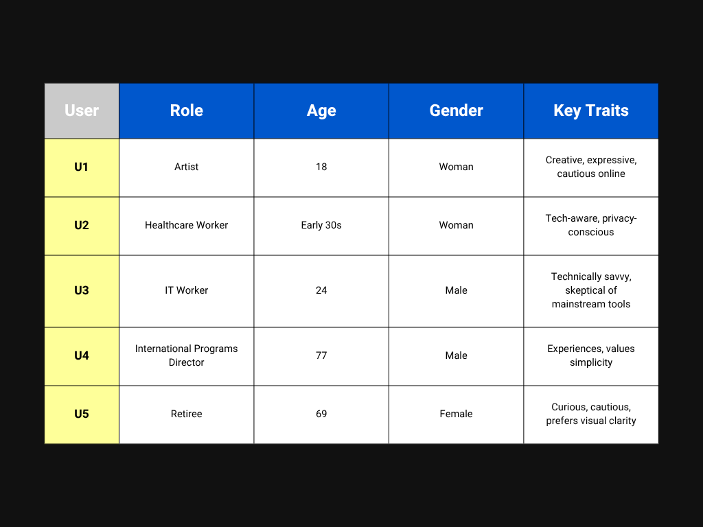
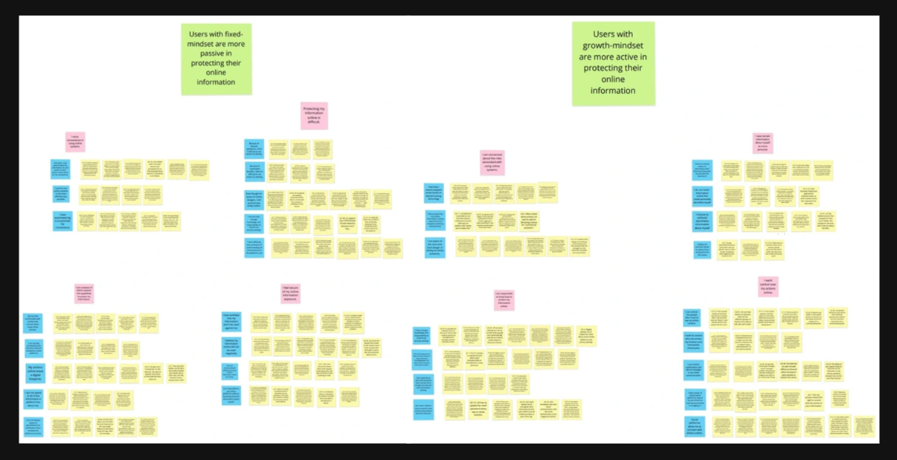
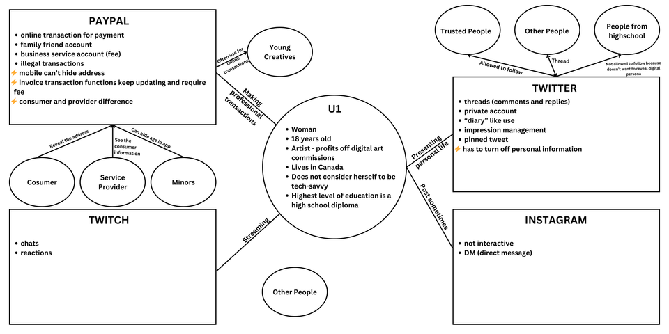
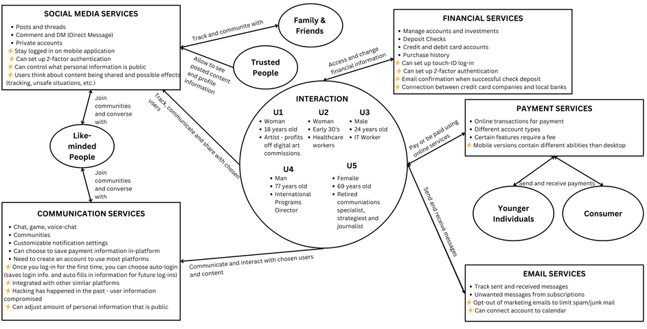

Anonymity Armor
Jan - Apr 2024Designing a browser extension to empower users with control over their online privacy.
Design Challenge
In an increasingly data-driven world, users often feel exposed and powerless when navigating digital environments. Our challenge was to understand how people perceive online privacy and to design a solution that gives them agency, clarity, and emotional reassurance, especially during high-risk moments like checkout.
From this design challenge came Anonymity Armor, a browser extension designed to address the privacy worries expressed by users.
Research Overview
We began with five in-depth interviews that had already been conducted. I received the audio recordings and took the lead on transcribing and coding, identifying patterns and recurring concerns.
Meet the Users
Affinity Diagram
To organize the data in a visual manner, my team created an affinity diagram that clustered insights into overarching themes.
This diagram helped us identify key design opportunities deriving straight from user experiences.
Collaboration Models
In addition to affinity diagrams, we created collaboration models for U1, U3, and U5, as well as a consolidated collaboration model. This helped us to visualize how each user interacts with digital tools and where their privacy concerns emerge.
Note: Important insights are marked with lightning bolts, bringing focus to any critical concerns or suggestions raised by participants:
<3>U1 Collaboration Model What does this show us?
- Individual privacy behavior: Shows how U1 manages personal vs. professional identity across platforms (e.g., private Twitter vs. public PayPal use).
- Platform-specific risks: Each platform reveals distinct privacy challenges, like exposure of personal info or limited control over visibility.
- Tech confidence & literacy: U1's limited tech-savviness influences her privacy decisions, emphasizing the need for accessible privacy design.
What does this show us?
- Professional context and boundaries: U3's digital behavior revolves around work-related tools and communication platforms where privacy and confidentiality are critical.
- Trust and compliance: Emphasizes how professionals handle sensitive information and the importance of institutional privacy policies.
- Technology proficiency: U3 likely uses advanced security features like 2FA and work email encryption, showing how privacy confidence varies with tech literacy and job requirements.
- Platform overlap: Highlights where professional and personal tools intersect (using the same device or email for both), revealing potential privacy vulnerabilities.
What does this show us?
- Experience with technology over time: U5's long digital history (using computers since 1992) shows how evolving platforms have changed privacy expectations and habits.
- Convenience vs. caution: Tools like Keychain and Touch-ID improve accessibility but also raise security risks, especially across multiple devices.
- Privacy challenges with longevity: Continuous use of digital accounts over decades can create data permanence issues, seen by stored ride histories and archived communications.
Consolidated Collaboration Model
What does this show us?
- Cross-user comparison: Combines multiple user types to show shared and unique behavior around digital privacy.
- Ecosystem view: Demonstrates how communication, payment, financial, and social media services intersect, revealing where privacy leaks or friction occur.
- Trust networks: Visualizes how relationships (family, friends, like-minded people) shape information sharing and exposure.
- Systemic insights: Helps identify common pain points that informed design priorities for Anonymity Armor.
Key Insights from Visual Synthesis
After coding five user interviews and translating the data into visual formats, several core themes stood out:
Privacy is contextual and emotionally charged
Users don't just want privacy; they want control over when and how it's activated. Their comfort levels shift depending on the platform, audience, and task, especially during financial transactions or identity-sensitive interactions.
Mental models vary widely
From U1's creative use of Twitter for impression management to U5's decades-long digital footprint across financial and fitness platforms, users bring vastly different expectations and habits to online privacy. This diversity demands flexible, user-driven tools.
Visual feedback builds trust
Across all models, users rely on subtle visual cues such as overlays, icons, or confirmation messages to feel reassured that privacy tools are working. Passive or invisible protections often go unnoticed or unused.
Emotional safety matters
Users expressed anxiety, skepticism, and even resignation about their data being collected. Tools that acknowledge and respond to these emotions — not just technical risks — are more likely to be adopted and trusted.
Design Concept: Anonymity Armor (AA)
Based on these insights, we designed Anonymity Armor, a browser extension that empowers users to activate privacy protection when they need it most. AA is built around intentional control, emotional reassurance, and visual clarity.
Core Features
Checkout Securely Mode
- Activates a soft, eye-friendly visual mask during checkout
- Signals that AA is actively protecting sensitive data
- Helps users remember to toggle it off when no longer needed
Enhanced Security Settings
- Users can customize privacy levels based on their comfort
- Options range from basic tracking protection to full encryption
- Designed to be intuitive and non-technical
Anonymous Communication
- Enable secure, identity-free contact with customer service
- Supports inquiries without compromising personal information
Subtle Visual Feedback
- A gentle overlay appears when AA is active
- No pop-ups or alerts. Just quiet, ambient reassurance
Storyboard: Amerlia's Journey with AA
To illustrate how AA works in practice, we created a storyboard for Amelia, a diligent student with a strong online presence.
Amelia sat at her desk, browsing Push&Pull for a birthday gift. Though excited, she felt uneasy — recent data breaches had made her wary. She activated Anonymity Armor, customized her settings, and continued shopping with confidence.
How AA Supported Amelia
- Enhanced Security Settings: Amelia encrypted her browsing data, shielding it from unauthorized access.
- Empowerment Through Anonymity: She felt in control, no longer a passive target for advertisers.
- Secure Transactions: AA's payment gateway protected her financial information during checkout.
- Anonymous Communication: She contacted customer service without revealing her identity.